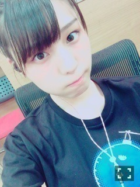

| 2016/07 02 Sat | 実は考えがアル、のだっ！_(．．*)vol.99 |
みなさんこんばんはー！
相楽伊織です！
新制服
まだまだ子供です(^^)、
15枚目アンダー曲
｢シークレットグラフィティー｣が
解禁されましたー！
皆さんもう聴いてくれましたかー？？
久しぶりにポップな曲で
振り付けも可愛いので
早く皆さんにも見てほしい！
ライブまでに
沢山聞いて覚えててくださいねっヽ(*^^*)ノ
握手会で浴衣着る？って言われて、
どうしようか迷ってたんですけど
9/25に何人か着るみたいなので
私もそのタイミングで着ますね(^_-)-☆
そして10/29で
ハロウィンコスプレします♪♪
~いおり庵~
 バスケの背番号何番だった？
バスケの背番号何番だった？
小4が13番で
小5が7番？で
小6の時はキャプテンの4番だったよー！
お祭りとかいくのー？
今のところ行く予定はない(｡> <｡)
日程が合えば
日本三大祭りとか行ってみたいなぁ♪♪
ジブリはどの作品が好き？
トトロと千と千尋の神隠しは特に好き！
借りぐらしのアリエッティも好き(^^)

明日はアルバム特典の
クルージングー(^-^)/
来て下さる方は
酔わないように気をつけてくださいね！
ちなみに私は
乗り物酔いしたことないから
絶対大丈夫だと思ってる、★
耳から出てるのは
イヤホンのケーブルです。
 楽天SHOWTIME 乃木坂ゴルフ倶楽部
GREEN GORA 発売中
OVERTURE 発売中
月刊エンタメ 発売中
FLASHスペシャル 発売中
別冊カドカワ 発売中
楽天SHOWTIME 乃木坂ゴルフ倶楽部
GREEN GORA 発売中
OVERTURE 発売中
月刊エンタメ 発売中
FLASHスペシャル 発売中
別冊カドカワ 発売中
今回はで取材をしていただきました！
音楽は大好きだし、
本当に毎日聴いてるから
5曲に絞るのは結構難しかったです＞＜
読んだ方はオススメの5曲
是非聴いてみてください♪♪
i o r i .

コメント(189)
2016/07/02 23:00